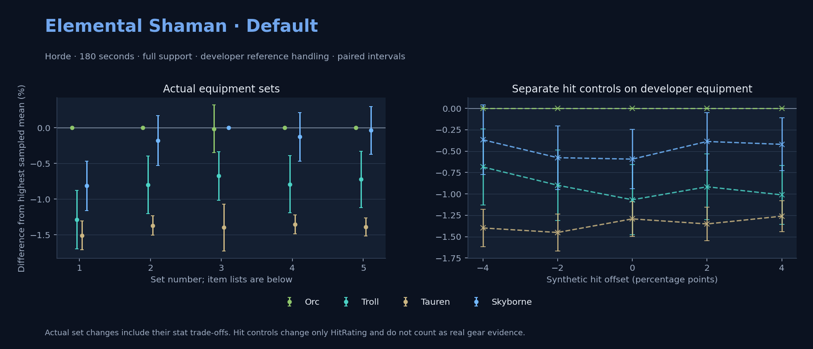

Horde · Orc / Troll / Tauren / Skyborne

No pet or guardian appears in the reference combat metrics. Reference: Orc, developer equipment, 180 seconds and full support. Pet choices remain those of the developer build.
WoWSims developer · Testing
Unmeasured proc rates: [{"source": "enchant", "id": 8217, "name": "Enchant Weapon - Revelation", "kind": "chance", "origin": "unknown"}]
180 seconds, full support and original developer references. Hit below is generic sheet melee / spell hit; school and talent bonuses can be attached directly to spells.
| Race | DPS | Gap and interval | Generic hit | Replay |
|---|---|---|---|---|
| Orc | 515.75 | +0.000% ± 0.000 | 8.0% / 8.0% | Native input · Website JSON |
| Skyborne | 511.56 | -0.814% ± 0.347 | 8.0% / 8.0% | Native input · Website JSON |
| Troll | 509.11 | -1.287% ± 0.408 | 8.0% / 8.0% | Native input · Website JSON |
| Tauren | 507.96 | -1.511% ± 0.202 | 8.0% / 8.0% | Native input · Website JSON |
| Slot | Item | ID | Enchant |
|---|---|---|---|
| Head | Blue Dragonscale Helm | 252604 | Lesser Arcane Amalgamation |
| Neck | Chains of the Lich | 23125 | Enchant Necklace - Spell Power |
| Shoulder | Mantle of the Timbermaw | 19050 | |
| Back | Arcanoweave Cloak | 272411 | Enchant Cloak - Subtlety |
| Chest | Master's Vest | 10246 | Enchant Chest - Major Intellect |
| Wrist | Master's Bracers | 10248 | Enchant Bracer - Superior Intellect |
| Hands | Gloves of the Greatfather | 17721 | Enchant Gloves - Natural Power |
| Waist | Defiler's Cloth Girdle | 20163 | |
| Legs | Ironfeather Leggings | 252486 | Lesser Arcane Amalgamation |
| Feet | Master's Boots | 10247 | Mystic Rugged Armor Kit |
| Ring 1 | Blessed Band of Light | 272407 | |
| Ring 2 | Maiden's Circle | 13001 | |
| Trinket 1 | Weakness Analyzer | 272438 | |
| Trinket 2 | Jewel of the Guard Captain | 270225 | |
| Main hand | Verimonde's Last Resort | 22688 | Enchant Weapon - Revelation |
| Off hand | Spirit of Aquementas | 11904 | |
| Ranged / relic | Totem of the Storm | 23199 |
Community calculated list · Published pre-raid
Unmeasured proc rates: [{"source": "item", "id": 2243, "name": "Hand of Edward the Odd", "kind": "ppm", "origin": "vanilla"}]
180 seconds, full support and original developer references. Hit below is generic sheet melee / spell hit; school and talent bonuses can be attached directly to spells.
| Race | DPS | Gap and interval | Generic hit | Replay |
|---|---|---|---|---|
| Orc | 531.68 | +0.000% ± 0.000 | 9.0% / 9.0% | Native input · Website JSON |
| Skyborne | 530.73 | -0.178% ± 0.349 | 9.0% / 9.0% | Native input · Website JSON |
| Troll | 527.42 | -0.801% ± 0.402 | 9.0% / 9.0% | Native input · Website JSON |
| Tauren | 524.39 | -1.370% ± 0.134 | 9.0% / 9.0% | Native input · Website JSON |
| Slot | Item | ID | Enchant |
|---|---|---|---|
| Head | Blue Dragonscale Helm | 252604 | Arcanum of Focus |
| Neck | Archlight Talisman | 15856 | Enchant Necklace - Spell Power |
| Shoulder | Mantle of the Timbermaw | 19050 | |
| Back | Arcanoweave Cloak | 272411 | |
| Chest | Vest of Elements | 16666 | Mystic Rugged Armor Kit |
| Wrist | Bindings of Elements | 16671 | Enchant Bracer - Greater Spellpower |
| Hands | Gloves of the Greatfather | 17721 | Enchant Gloves - Natural Power |
| Waist | Belt of the Archmage | 18405 | |
| Legs | Ironfeather Leggings | 252486 | Arcanum of Focus |
| Feet | Boots of Elements | 16670 | Mystic Rugged Armor Kit |
| Ring 1 | Blessed Band of Light | 272407 | |
| Ring 2 | Maiden's Circle | 13001 | |
| Trinket 1 | Weakness Analyzer | 272438 | |
| Trinket 2 | Rune of the Guard Captain | 19120 | |
| Main hand | Hand of Edward the Odd | 2243 | |
| Off hand | Spirit of Aquementas | 11904 | Enchant Off-Hand - Superior Intellect |
| Ranged / relic | Burning Totem | 272433 |
Published one-slot hit alternative · Published pre-raid
One source-listed alternative; at least 80% of the source slot score retained. Reported hit selects the contrast; only native stats determine simulation outcomes. This is an experimental combination, not an endorsed best set.
Unmeasured proc rates: [{"source": "item", "id": 2243, "name": "Hand of Edward the Odd", "kind": "ppm", "origin": "vanilla"}]
180 seconds, full support and original developer references. Hit below is generic sheet melee / spell hit; school and talent bonuses can be attached directly to spells.
| Race | DPS | Gap and interval | Generic hit | Replay |
|---|---|---|---|---|
| Skyborne | 530.62 | +0.000% ± 0.000 | 10.0% / 10.0% | Native input · Website JSON |
| Orc | 530.54 | -0.015% ± 0.334 | 10.0% / 10.0% | Native input · Website JSON |
| Troll | 527.04 | -0.675% ± 0.342 | 10.0% / 10.0% | Native input · Website JSON |
| Tauren | 523.20 | -1.399% ± 0.329 | 10.0% / 10.0% | Native input · Website JSON |
| Slot | Item | ID | Enchant |
|---|---|---|---|
| Head | Blue Dragonscale Helm | 252604 | Arcanum of Focus |
| Neck | Archlight Talisman | 15856 | Enchant Necklace - Spell Power |
| Shoulder | Mantle of the Timbermaw | 19050 | |
| Back | Arcanoweave Cloak | 272411 | |
| Chest | Vest of Elements | 16666 | Mystic Rugged Armor Kit |
| Wrist | Bindings of Elements | 16671 | Enchant Bracer - Greater Spellpower |
| Hands | Storm Gauntlets | 12632 | Enchant Gloves - Natural Power |
| Waist | Belt of the Archmage | 18405 | |
| Legs | Ironfeather Leggings | 252486 | Arcanum of Focus |
| Feet | Boots of Elements | 16670 | Mystic Rugged Armor Kit |
| Ring 1 | Blessed Band of Light | 272407 | |
| Ring 2 | Maiden's Circle | 13001 | |
| Trinket 1 | Weakness Analyzer | 272438 | |
| Trinket 2 | Rune of the Guard Captain | 19120 | |
| Main hand | Hand of Edward the Odd | 2243 | |
| Off hand | Spirit of Aquementas | 11904 | Enchant Off-Hand - Superior Intellect |
| Ranged / relic | Burning Totem | 272433 |
Published ranked alternatives · Published pre-raid
Recorded source replacements: [{"slot": "shoulder", "from": 227808, "to": 19050, "publishedAlternativeRank": 1, "publishedEpDelta": -10.4, "reason": "First published alternative compatible with the current WoWSims database, class, faction and occupied slots."}, {"slot": "waist", "from": 228190, "to": 18405, "publishedAlternativeRank": 1, "publishedEpDelta": -8.4, "reason": "First published alternative compatible with the current WoWSims database, class, faction and occupied slots."}]
Unmeasured proc rates: [{"source": "item", "id": 2243, "name": "Hand of Edward the Odd", "kind": "ppm", "origin": "vanilla"}]
180 seconds, full support and original developer references. Hit below is generic sheet melee / spell hit; school and talent bonuses can be attached directly to spells.
| Race | DPS | Gap and interval | Generic hit | Replay |
|---|---|---|---|---|
| Orc | 532.72 | +0.000% ± 0.000 | 9.2% / 9.2% | Native input · Website JSON |
| Skyborne | 532.06 | -0.125% ± 0.341 | 9.2% / 9.2% | Native input · Website JSON |
| Troll | 528.51 | -0.792% ± 0.400 | 9.2% / 9.2% | Native input · Website JSON |
| Tauren | 525.50 | -1.355% ± 0.134 | 9.2% / 9.2% | Native input · Website JSON |
| Slot | Item | ID | Enchant |
|---|---|---|---|
| Head | Blue Dragonscale Helm | 252604 | Arcanum of Focus |
| Neck | Archlight Talisman | 15856 | Enchant Necklace - Spell Power |
| Shoulder | Mantle of the Timbermaw | 19050 | |
| Back | Arcanoweave Cloak | 272411 | |
| Chest | Vest of Elements | 16666 | Mystic Rugged Armor Kit |
| Wrist | Bindings of Elements | 16671 | Enchant Bracer - Greater Spellpower |
| Hands | Gloves of the Greatfather | 17721 | Enchant Gloves - Natural Power |
| Waist | Belt of the Archmage | 18405 | |
| Legs | Ironfeather Leggings | 252486 | Arcanum of Focus |
| Feet | Boots of Elements | 16670 | Mystic Rugged Armor Kit |
| Ring 1 | Blessed Band of Light | 272407 | |
| Ring 2 | Maiden's Circle | 13001 | |
| Trinket 1 | Weakness Analyzer | 272438 | |
| Trinket 2 | Frozen Heart of the Mountain | 249469 | |
| Main hand | Hand of Edward the Odd | 2243 | |
| Off hand | Spirit of Aquementas | 11904 | Enchant Off-Hand - Superior Intellect |
| Ranged / relic | Burning Totem | 272433 |
Published one-slot hit alternative · Published pre-raid
One source-listed alternative; at least 80% of the source slot score retained. Reported hit selects the contrast; only native stats determine simulation outcomes. This is an experimental combination, not an endorsed best set.
Recorded source replacements: [{"slot": "shoulder", "from": 227808, "to": 19050, "publishedAlternativeRank": 1, "publishedEpDelta": -10.4, "reason": "First published alternative compatible with the current WoWSims database, class, faction and occupied slots."}, {"slot": "waist", "from": 228190, "to": 18405, "publishedAlternativeRank": 1, "publishedEpDelta": -8.4, "reason": "First published alternative compatible with the current WoWSims database, class, faction and occupied slots."}]
Unmeasured proc rates: [{"source": "item", "id": 2243, "name": "Hand of Edward the Odd", "kind": "ppm", "origin": "vanilla"}]
180 seconds, full support and original developer references. Hit below is generic sheet melee / spell hit; school and talent bonuses can be attached directly to spells.
| Race | DPS | Gap and interval | Generic hit | Replay |
|---|---|---|---|---|
| Orc | 532.00 | +0.000% ± 0.000 | 10.2% / 10.2% | Native input · Website JSON |
| Skyborne | 531.80 | -0.037% ± 0.336 | 10.2% / 10.2% | Native input · Website JSON |
| Troll | 528.15 | -0.723% ± 0.394 | 10.2% / 10.2% | Native input · Website JSON |
| Tauren | 524.61 | -1.389% ± 0.126 | 10.2% / 10.2% | Native input · Website JSON |
| Slot | Item | ID | Enchant |
|---|---|---|---|
| Head | Blue Dragonscale Helm | 252604 | Arcanum of Focus |
| Neck | Archlight Talisman | 15856 | Enchant Necklace - Spell Power |
| Shoulder | Mantle of the Timbermaw | 19050 | |
| Back | Arcanoweave Cloak | 272411 | |
| Chest | Vest of Elements | 16666 | Mystic Rugged Armor Kit |
| Wrist | Bindings of Elements | 16671 | Enchant Bracer - Greater Spellpower |
| Hands | Storm Gauntlets | 12632 | Enchant Gloves - Natural Power |
| Waist | Belt of the Archmage | 18405 | |
| Legs | Ironfeather Leggings | 252486 | Arcanum of Focus |
| Feet | Boots of Elements | 16670 | Mystic Rugged Armor Kit |
| Ring 1 | Blessed Band of Light | 272407 | |
| Ring 2 | Maiden's Circle | 13001 | |
| Trinket 1 | Weakness Analyzer | 272438 | |
| Trinket 2 | Frozen Heart of the Mountain | 249469 | |
| Main hand | Hand of Edward the Odd | 2243 | |
| Off hand | Spirit of Aquementas | 11904 | Enchant Off-Hand - Superior Intellect |
| Ranged / relic | Burning Totem | 272433 |
The same declared pool is available to every race. Each race keeps its best validation-sample set with its screening-selected racial policy. Separate samples confirm that choice, with fresh precision samples near the practical-loss boundary. Gaps use the highest sampled mean under that same duration, support and reference treatment as their reference. A zero reference gap does not certify a race; the main matrix also allows uncertainty in the leader.
| Pool | Seconds | Support | References | Race | DPS | Gap and interval | Racial policies / mana | Selected set | Generic hit: melee / spell | Replay |
|---|---|---|---|---|---|---|---|---|---|---|
| published-pre-raid | 60 | full | developer | Troll | 579.68 | +0.000% ± 0.00020,000 iterations | developer / developer / developerMana waits 0.0s | published-shaman-elemental-horde-3c36f8c2f10f68a1-higher-hit | 10.2% / 10.2% | Input · Result · Stats |
| published-pre-raid | 60 | full | developer | Orc | 576.95 | -0.471% ± 0.13420,000 iterations | developer / developer / developerMana waits 0.0s | published-shaman-elemental-horde-3c36f8c2f10f68a1 | 9.2% / 9.2% | Input · Result · Stats |
| published-pre-raid | 60 | full | developer | Skyborne | 569.82 | -1.701% ± 0.10320,000 iterations | developer / developer / developerMana waits 0.0s | published-shaman-elemental-horde-3c36f8c2f10f68a1-higher-hit | 10.2% / 10.2% | Input · Result · Stats |
| published-pre-raid | 60 | full | developer | Tauren | 565.36 | -2.471% ± 0.13220,000 iterations | developer / developer / developerMana waits 0.0s | published-shaman-elemental-horde-3c36f8c2f10f68a1 | 9.2% / 9.2% | Input · Result · Stats |
| published-pre-raid | 60 | full | explicit | Troll | 579.68 | +0.000% ± 0.00020,000 iterations | developer / developer / developerMana waits 0.0s | published-shaman-elemental-horde-3c36f8c2f10f68a1-higher-hit | 10.2% / 10.2% | Input · Result · Stats |
| published-pre-raid | 60 | full | explicit | Orc | 576.95 | -0.471% ± 0.13420,000 iterations | developer / developer / developerMana waits 0.0s | published-shaman-elemental-horde-3c36f8c2f10f68a1 | 9.2% / 9.2% | Input · Result · Stats |
| published-pre-raid | 60 | full | explicit | Skyborne | 569.82 | -1.701% ± 0.10320,000 iterations | developer / developer / developerMana waits 0.0s | published-shaman-elemental-horde-3c36f8c2f10f68a1-higher-hit | 10.2% / 10.2% | Input · Result · Stats |
| published-pre-raid | 60 | full | explicit | Tauren | 565.36 | -2.471% ± 0.13220,000 iterations | developer / developer / developerMana waits 0.0s | published-shaman-elemental-horde-3c36f8c2f10f68a1 | 9.2% / 9.2% | Input · Result · Stats |
| published-pre-raid | 60 | self | developer | Troll | 505.51 | +0.000% ± 0.00020,000 iterations | oncd / developer / developerMana waits 1.0s | published-shaman-elemental-horde-3c36f8c2f10f68a1 | 9.2% / 9.2% | Input · Result · Stats |
| published-pre-raid | 60 | self | developer | Orc | 504.17 | -0.264% ± 0.13220,000 iterations | developer / developer / developerMana waits 0.4s | published-shaman-elemental-horde-3c36f8c2f10f68a1 | 9.2% / 9.2% | Input · Result · Stats |
| published-pre-raid | 60 | self | developer | Skyborne | 498.96 | -1.296% ± 0.10520,000 iterations | developer / developer / developerMana waits 0.6s | published-shaman-elemental-horde-3c36f8c2f10f68a1 | 9.2% / 9.2% | Input · Result · Stats |
| published-pre-raid | 60 | self | developer | Tauren | 493.76 | -2.324% ± 0.12920,000 iterations | developer / developer / developerMana waits 0.5s | published-shaman-elemental-horde-3c36f8c2f10f68a1 | 9.2% / 9.2% | Input · Result · Stats |
| published-pre-raid | 60 | self | explicit | Troll | 505.51 | +0.000% ± 0.00020,000 iterations | oncd / developer / developerMana waits 1.0s | published-shaman-elemental-horde-3c36f8c2f10f68a1 | 9.2% / 9.2% | Input · Result · Stats |
| published-pre-raid | 60 | self | explicit | Orc | 504.17 | -0.264% ± 0.13220,000 iterations | developer / developer / developerMana waits 0.4s | published-shaman-elemental-horde-3c36f8c2f10f68a1 | 9.2% / 9.2% | Input · Result · Stats |
| published-pre-raid | 60 | self | explicit | Skyborne | 498.96 | -1.296% ± 0.10520,000 iterations | developer / developer / developerMana waits 0.6s | published-shaman-elemental-horde-3c36f8c2f10f68a1 | 9.2% / 9.2% | Input · Result · Stats |
| published-pre-raid | 60 | self | explicit | Tauren | 493.76 | -2.324% ± 0.12920,000 iterations | developer / developer / developerMana waits 0.5s | published-shaman-elemental-horde-3c36f8c2f10f68a1 | 9.2% / 9.2% | Input · Result · Stats |
| published-pre-raid | 180 | full | developer | Orc | 533.33 | +0.000% ± 0.00020,000 iterations | developer / developer / developerMana waits 8.7s | published-shaman-elemental-horde-3c36f8c2f10f68a1 | 9.2% / 9.2% | Input · Result · Stats · Website JSON |
| published-pre-raid | 180 | full | developer | Skyborne | 532.25 | -0.203% ± 0.07720,000 iterations | developer / developer / developerMana waits 11.3s | published-shaman-elemental-horde-3c36f8c2f10f68a1 | 9.2% / 9.2% | Input · Result · Stats · Website JSON |
| published-pre-raid | 180 | full | developer | Troll | 528.21 | -0.960% ± 0.08920,000 iterations | oncd / developer / developerMana waits 11.0s | published-shaman-elemental-horde-3c36f8c2f10f68a1 | 9.2% / 9.2% | Input · Result · Stats · Website JSON |
| published-pre-raid | 180 | full | developer | Tauren | 525.98 | -1.379% ± 0.03020,000 iterations | developer / developer / developerMana waits 9.4s | published-shaman-elemental-horde-3c36f8c2f10f68a1 | 9.2% / 9.2% | Input · Result · Stats · Website JSON |
| published-pre-raid | 180 | full | explicit | Orc | 533.33 | +0.000% ± 0.00020,000 iterations | developer / developer / developerMana waits 8.7s | published-shaman-elemental-horde-3c36f8c2f10f68a1 | 9.2% / 9.2% | Input · Result · Stats |
| published-pre-raid | 180 | full | explicit | Skyborne | 532.25 | -0.203% ± 0.07720,000 iterations | developer / developer / developerMana waits 11.3s | published-shaman-elemental-horde-3c36f8c2f10f68a1 | 9.2% / 9.2% | Input · Result · Stats |
| published-pre-raid | 180 | full | explicit | Troll | 528.21 | -0.960% ± 0.08920,000 iterations | oncd / developer / developerMana waits 11.0s | published-shaman-elemental-horde-3c36f8c2f10f68a1 | 9.2% / 9.2% | Input · Result · Stats |
| published-pre-raid | 180 | full | explicit | Tauren | 525.98 | -1.379% ± 0.03020,000 iterations | developer / developer / developerMana waits 9.4s | published-shaman-elemental-horde-3c36f8c2f10f68a1 | 9.2% / 9.2% | Input · Result · Stats |
| published-pre-raid | 180 | self | developer | Orc | 319.51 | +0.000% ± 0.0005,000 iterations | developer / developer / developerMana waits 90.8s | published-shaman-elemental-horde-3c36f8c2f10f68a1 | 9.2% / 9.2% | Input · Result · Stats |
| published-pre-raid | 180 | self | developer | Skyborne | 314.73 | -1.495% ± 0.1665,000 iterations | developer / developer / developerMana waits 92.5s | published-shaman-elemental-horde-3c36f8c2f10f68a1 | 9.2% / 9.2% | Input · Result · Stats |
| published-pre-raid | 180 | self | developer | Troll | 312.64 | -2.149% ± 0.1895,000 iterations | oncd / developer / developerMana waits 93.5s | published-shaman-elemental-horde-3c36f8c2f10f68a1 | 9.2% / 9.2% | Input · Result · Stats |
| published-pre-raid | 180 | self | developer | Tauren | 312.53 | -2.185% ± 0.1025,000 iterations | developer / developer / developerMana waits 91.4s | published-shaman-elemental-horde-3c36f8c2f10f68a1 | 9.2% / 9.2% | Input · Result · Stats |
| published-pre-raid | 180 | self | explicit | Orc | 319.51 | +0.000% ± 0.0005,000 iterations | developer / developer / developerMana waits 90.8s | published-shaman-elemental-horde-3c36f8c2f10f68a1 | 9.2% / 9.2% | Input · Result · Stats |
| published-pre-raid | 180 | self | explicit | Skyborne | 314.73 | -1.495% ± 0.1665,000 iterations | developer / developer / developerMana waits 92.5s | published-shaman-elemental-horde-3c36f8c2f10f68a1 | 9.2% / 9.2% | Input · Result · Stats |
| published-pre-raid | 180 | self | explicit | Troll | 312.64 | -2.149% ± 0.1895,000 iterations | oncd / developer / developerMana waits 93.5s | published-shaman-elemental-horde-3c36f8c2f10f68a1 | 9.2% / 9.2% | Input · Result · Stats |
| published-pre-raid | 180 | self | explicit | Tauren | 312.53 | -2.185% ± 0.1025,000 iterations | developer / developer / developerMana waits 91.4s | published-shaman-elemental-horde-3c36f8c2f10f68a1 | 9.2% / 9.2% | Input · Result · Stats |
| published-pre-raid | 300 | full | developer | Orc | 470.24 | +0.000% ± 0.0005,000 iterations | developer / developer / developerMana waits 78.8s | published-shaman-elemental-horde-3c36f8c2f10f68a1 | 9.2% / 9.2% | Input · Result · Stats |
| published-pre-raid | 300 | full | developer | Skyborne | 466.11 | -0.879% ± 0.1375,000 iterations | developer / developer / developerMana waits 84.4s | published-shaman-elemental-horde-3c36f8c2f10f68a1-higher-hit | 10.2% / 10.2% | Input · Result · Stats |
| published-pre-raid | 300 | full | developer | Troll | 464.98 | -1.120% ± 0.1505,000 iterations | oncd / developer / developerMana waits 83.1s | published-shaman-elemental-horde-3c36f8c2f10f68a1 | 9.2% / 9.2% | Input · Result · Stats |
| published-pre-raid | 300 | full | developer | Tauren | 463.90 | -1.348% ± 0.0835,000 iterations | developer / developer / developerMana waits 80.3s | published-shaman-elemental-horde-3c36f8c2f10f68a1 | 9.2% / 9.2% | Input · Result · Stats |
| published-pre-raid | 300 | full | explicit | Orc | 470.24 | +0.000% ± 0.0005,000 iterations | developer / developer / developerMana waits 78.8s | published-shaman-elemental-horde-3c36f8c2f10f68a1 | 9.2% / 9.2% | Input · Result · Stats |
| published-pre-raid | 300 | full | explicit | Skyborne | 466.11 | -0.879% ± 0.1375,000 iterations | developer / developer / developerMana waits 84.4s | published-shaman-elemental-horde-3c36f8c2f10f68a1-higher-hit | 10.2% / 10.2% | Input · Result · Stats |
| published-pre-raid | 300 | full | explicit | Troll | 464.98 | -1.120% ± 0.1505,000 iterations | oncd / developer / developerMana waits 83.1s | published-shaman-elemental-horde-3c36f8c2f10f68a1 | 9.2% / 9.2% | Input · Result · Stats |
| published-pre-raid | 300 | full | explicit | Tauren | 463.90 | -1.348% ± 0.0835,000 iterations | developer / developer / developerMana waits 80.3s | published-shaman-elemental-horde-3c36f8c2f10f68a1 | 9.2% / 9.2% | Input · Result · Stats |
| published-pre-raid | 300 | self | developer | Orc | 270.31 | +0.000% ± 0.0005,000 iterations | developer / developer / developerMana waits 190.9s | published-shaman-elemental-horde-3c36f8c2f10f68a1 | 9.2% / 9.2% | Input · Result · Stats |
| published-pre-raid | 300 | self | developer | Skyborne | 265.71 | -1.703% ± 0.1405,000 iterations | developer / developer / developerMana waits 193.0s | published-shaman-elemental-horde-3c36f8c2f10f68a1 | 9.2% / 9.2% | Input · Result · Stats |
| published-pre-raid | 300 | self | developer | Troll | 264.50 | -2.149% ± 0.1565,000 iterations | oncd / developer / developerMana waits 193.7s | published-shaman-elemental-horde-3c36f8c2f10f68a1 | 9.2% / 9.2% | Input · Result · Stats |
| published-pre-raid | 300 | self | developer | Tauren | 264.47 | -2.162% ± 0.0965,000 iterations | developer / developer / developerMana waits 191.6s | published-shaman-elemental-horde-3c36f8c2f10f68a1 | 9.2% / 9.2% | Input · Result · Stats |
| published-pre-raid | 300 | self | explicit | Orc | 270.31 | +0.000% ± 0.0005,000 iterations | developer / developer / developerMana waits 190.9s | published-shaman-elemental-horde-3c36f8c2f10f68a1 | 9.2% / 9.2% | Input · Result · Stats |
| published-pre-raid | 300 | self | explicit | Skyborne | 265.71 | -1.703% ± 0.1405,000 iterations | developer / developer / developerMana waits 193.0s | published-shaman-elemental-horde-3c36f8c2f10f68a1 | 9.2% / 9.2% | Input · Result · Stats |
| published-pre-raid | 300 | self | explicit | Troll | 264.50 | -2.149% ± 0.1565,000 iterations | oncd / developer / developerMana waits 193.7s | published-shaman-elemental-horde-3c36f8c2f10f68a1 | 9.2% / 9.2% | Input · Result · Stats |
| published-pre-raid | 300 | self | explicit | Tauren | 264.47 | -2.162% ± 0.0965,000 iterations | developer / developer / developerMana waits 191.6s | published-shaman-elemental-horde-3c36f8c2f10f68a1 | 9.2% / 9.2% | Input · Result · Stats |
| developer-reference | 60 | full | developer | Troll | 593.93 | +0.000% ± 0.00020,000 iterations | oncd / developer / developerMana waits 0.0s | developer | 8.0% / 8.0% | Input · Result · Stats |
| developer-reference | 60 | full | developer | Orc | 590.03 | -0.656% ± 0.13320,000 iterations | developer / developer / developerMana waits 0.0s | developer | 8.0% / 8.0% | Input · Result · Stats |
| developer-reference | 60 | full | developer | Skyborne | 589.54 | -0.738% ± 0.11920,000 iterations | developer / developer / developerMana waits 0.0s | developer | 8.0% / 8.0% | Input · Result · Stats |
| developer-reference | 60 | full | developer | Tauren | 578.63 | -2.576% ± 0.13020,000 iterations | developer / developer / developerMana waits 0.0s | developer | 8.0% / 8.0% | Input · Result · Stats |
| developer-reference | 60 | full | explicit | Troll | 593.93 | +0.000% ± 0.00020,000 iterations | oncd / developer / developerMana waits 0.0s | developer | 8.0% / 8.0% | Input · Result · Stats |
| developer-reference | 60 | full | explicit | Orc | 590.03 | -0.656% ± 0.13320,000 iterations | developer / developer / developerMana waits 0.0s | developer | 8.0% / 8.0% | Input · Result · Stats |
| developer-reference | 60 | full | explicit | Skyborne | 589.54 | -0.738% ± 0.11920,000 iterations | developer / developer / developerMana waits 0.0s | developer | 8.0% / 8.0% | Input · Result · Stats |
| developer-reference | 60 | full | explicit | Tauren | 578.63 | -2.576% ± 0.13020,000 iterations | developer / developer / developerMana waits 0.0s | developer | 8.0% / 8.0% | Input · Result · Stats |
| developer-reference | 60 | self | developer | Orc | 506.30 | +0.000% ± 0.00020,000 iterations | developer / developer / developerMana waits 3.6s | developer | 8.0% / 8.0% | Input · Result · Stats |
| developer-reference | 60 | self | developer | Skyborne | 503.55 | -0.543% ± 0.10720,000 iterations | developer / developer / developerMana waits 4.3s | developer | 8.0% / 8.0% | Input · Result · Stats |
| developer-reference | 60 | self | developer | Troll | 501.33 | -0.983% ± 0.13720,000 iterations | oncd / developer / developerMana waits 5.5s | developer | 8.0% / 8.0% | Input · Result · Stats |
| developer-reference | 60 | self | developer | Tauren | 494.46 | -2.338% ± 0.02820,000 iterations | developer / developer / developerMana waits 4.0s | developer | 8.0% / 8.0% | Input · Result · Stats |
| developer-reference | 60 | self | explicit | Orc | 506.30 | +0.000% ± 0.00020,000 iterations | developer / developer / developerMana waits 3.6s | developer | 8.0% / 8.0% | Input · Result · Stats |
| developer-reference | 60 | self | explicit | Skyborne | 503.55 | -0.543% ± 0.10720,000 iterations | developer / developer / developerMana waits 4.3s | developer | 8.0% / 8.0% | Input · Result · Stats |
| developer-reference | 60 | self | explicit | Troll | 501.33 | -0.983% ± 0.13720,000 iterations | oncd / developer / developerMana waits 5.5s | developer | 8.0% / 8.0% | Input · Result · Stats |
| developer-reference | 60 | self | explicit | Tauren | 494.46 | -2.338% ± 0.02820,000 iterations | developer / developer / developerMana waits 4.0s | developer | 8.0% / 8.0% | Input · Result · Stats |
| developer-reference | 180 | full | developer | Orc | 514.93 | +0.000% ± 0.00020,000 iterations | developer / developer / developerMana waits 27.6s | developer | 8.0% / 8.0% | Input · Result · Stats · Website JSON |
| developer-reference | 180 | full | developer | Skyborne | 511.69 | -0.628% ± 0.08220,000 iterations | developer / developer / developerMana waits 30.8s | developer | 8.0% / 8.0% | Input · Result · Stats · Website JSON |
| developer-reference | 180 | full | developer | Troll | 508.80 | -1.189% ± 0.09120,000 iterations | oncd / developer / developerMana waits 30.7s | developer | 8.0% / 8.0% | Input · Result · Stats · Website JSON |
| developer-reference | 180 | full | developer | Tauren | 506.97 | -1.545% ± 0.04520,000 iterations | developer / developer / developerMana waits 28.7s | developer | 8.0% / 8.0% | Input · Result · Stats · Website JSON |
| developer-reference | 180 | full | explicit | Orc | 514.93 | +0.000% ± 0.00020,000 iterations | developer / developer / developerMana waits 27.6s | developer | 8.0% / 8.0% | Input · Result · Stats |
| developer-reference | 180 | full | explicit | Skyborne | 511.69 | -0.628% ± 0.08220,000 iterations | developer / developer / developerMana waits 30.8s | developer | 8.0% / 8.0% | Input · Result · Stats |
| developer-reference | 180 | full | explicit | Troll | 508.80 | -1.189% ± 0.09120,000 iterations | oncd / developer / developerMana waits 30.7s | developer | 8.0% / 8.0% | Input · Result · Stats |
| developer-reference | 180 | full | explicit | Tauren | 506.97 | -1.545% ± 0.04520,000 iterations | developer / developer / developerMana waits 28.7s | developer | 8.0% / 8.0% | Input · Result · Stats |
| developer-reference | 180 | self | developer | Orc | 300.04 | +0.000% ± 0.0005,000 iterations | developer / developer / developerMana waits 102.0s | developer | 8.0% / 8.0% | Input · Result · Stats |
| developer-reference | 180 | self | developer | Skyborne | 295.30 | -1.581% ± 0.1655,000 iterations | developer / developer / developerMana waits 103.4s | developer | 8.0% / 8.0% | Input · Result · Stats |
| developer-reference | 180 | self | developer | Troll | 292.66 | -2.459% ± 0.2065,000 iterations | oncd / developer / developerMana waits 104.6s | developer | 8.0% / 8.0% | Input · Result · Stats |
| developer-reference | 180 | self | developer | Tauren | 292.65 | -2.462% ± 0.1115,000 iterations | developer / developer / developerMana waits 102.7s | developer | 8.0% / 8.0% | Input · Result · Stats |
| developer-reference | 180 | self | explicit | Orc | 300.04 | +0.000% ± 0.0005,000 iterations | developer / developer / developerMana waits 102.0s | developer | 8.0% / 8.0% | Input · Result · Stats |
| developer-reference | 180 | self | explicit | Skyborne | 295.30 | -1.581% ± 0.1655,000 iterations | developer / developer / developerMana waits 103.4s | developer | 8.0% / 8.0% | Input · Result · Stats |
| developer-reference | 180 | self | explicit | Troll | 292.66 | -2.459% ± 0.2065,000 iterations | oncd / developer / developerMana waits 104.6s | developer | 8.0% / 8.0% | Input · Result · Stats |
| developer-reference | 180 | self | explicit | Tauren | 292.65 | -2.462% ± 0.1115,000 iterations | developer / developer / developerMana waits 102.7s | developer | 8.0% / 8.0% | Input · Result · Stats |
| developer-reference | 300 | full | developer | Orc | 449.56 | +0.000% ± 0.0005,000 iterations | developer / developer / developerMana waits 109.5s | developer | 8.0% / 8.0% | Input · Result · Stats |
| developer-reference | 300 | full | developer | Skyborne | 445.16 | -0.979% ± 0.1395,000 iterations | developer / developer / developerMana waits 114.3s | developer | 8.0% / 8.0% | Input · Result · Stats |
| developer-reference | 300 | full | developer | Troll | 443.43 | -1.364% ± 0.1535,000 iterations | developer / developer / developerMana waits 113.8s | developer | 8.0% / 8.0% | Input · Result · Stats |
| developer-reference | 300 | full | developer | Tauren | 442.72 | -1.522% ± 0.0955,000 iterations | developer / developer / developerMana waits 110.7s | developer | 8.0% / 8.0% | Input · Result · Stats |
| developer-reference | 300 | full | explicit | Orc | 449.56 | +0.000% ± 0.0005,000 iterations | developer / developer / developerMana waits 109.5s | developer | 8.0% / 8.0% | Input · Result · Stats |
| developer-reference | 300 | full | explicit | Skyborne | 445.16 | -0.979% ± 0.1395,000 iterations | developer / developer / developerMana waits 114.3s | developer | 8.0% / 8.0% | Input · Result · Stats |
| developer-reference | 300 | full | explicit | Troll | 443.43 | -1.364% ± 0.1535,000 iterations | developer / developer / developerMana waits 113.8s | developer | 8.0% / 8.0% | Input · Result · Stats |
| developer-reference | 300 | full | explicit | Tauren | 442.72 | -1.522% ± 0.0955,000 iterations | developer / developer / developerMana waits 110.7s | developer | 8.0% / 8.0% | Input · Result · Stats |
| developer-reference | 300 | self | developer | Orc | 254.55 | +0.000% ± 0.0005,000 iterations | developer / developer / developerMana waits 204.0s | developer | 8.0% / 8.0% | Input · Result · Stats |
| developer-reference | 300 | self | developer | Skyborne | 249.88 | -1.834% ± 0.1415,000 iterations | developer / developer / developerMana waits 205.8s | developer | 8.0% / 8.0% | Input · Result · Stats |
| developer-reference | 300 | self | developer | Tauren | 248.33 | -2.440% ± 0.1085,000 iterations | developer / developer / developerMana waits 204.8s | developer | 8.0% / 8.0% | Input · Result · Stats |
| developer-reference | 300 | self | developer | Troll | 248.22 | -2.485% ± 0.1715,000 iterations | oncd / developer / developerMana waits 206.7s | developer | 8.0% / 8.0% | Input · Result · Stats |
| developer-reference | 300 | self | explicit | Orc | 254.55 | +0.000% ± 0.0005,000 iterations | developer / developer / developerMana waits 204.0s | developer | 8.0% / 8.0% | Input · Result · Stats |
| developer-reference | 300 | self | explicit | Skyborne | 249.88 | -1.834% ± 0.1415,000 iterations | developer / developer / developerMana waits 205.8s | developer | 8.0% / 8.0% | Input · Result · Stats |
| developer-reference | 300 | self | explicit | Tauren | 248.33 | -2.440% ± 0.1085,000 iterations | developer / developer / developerMana waits 204.8s | developer | 8.0% / 8.0% | Input · Result · Stats |
| developer-reference | 300 | self | explicit | Troll | 248.22 | -2.485% ± 0.1715,000 iterations | oncd / developer / developerMana waits 206.7s | developer | 8.0% / 8.0% | Input · Result · Stats |
180 seconds, full support and the developer equipment anchor. These checks test creature sensitivity without a full gear search.
| Target | References | Race | DPS | Gap and interval | Replay |
|---|---|---|---|---|---|
| beast | developer | Troll | 534.57 | +0.000% ± 0.000 | Input · Result |
| beast | developer | Orc | 514.61 | -3.733% ± 0.398 | Input · Result |
| beast | developer | Skyborne | 511.56 | -4.305% ± 0.372 | Input · Result |
| beast | developer | Tauren | 507.96 | -4.977% ± 0.403 | Input · Result |
| beast | explicit | Troll | 534.57 | +0.000% ± 0.000 | Input · Result |
| beast | explicit | Orc | 514.61 | -3.733% ± 0.398 | Input · Result |
| beast | explicit | Skyborne | 511.56 | -4.305% ± 0.372 | Input · Result |
| beast | explicit | Tauren | 507.96 | -4.977% ± 0.403 | Input · Result |
| elemental | developer | Skyborne | 537.13 | +0.000% ± 0.000 | Input · Result |
| elemental | developer | Orc | 514.61 | -4.193% ± 0.335 | Input · Result |
| elemental | developer | Troll | 509.11 | -5.217% ± 0.368 | Input · Result |
| elemental | developer | Tauren | 507.96 | -5.431% ± 0.343 | Input · Result |
| elemental | explicit | Skyborne | 537.13 | +0.000% ± 0.000 | Input · Result |
| elemental | explicit | Orc | 514.61 | -4.193% ± 0.335 | Input · Result |
| elemental | explicit | Troll | 509.11 | -5.217% ± 0.368 | Input · Result |
| elemental | explicit | Tauren | 507.96 | -5.431% ± 0.343 | Input · Result |
Some equipment uses unmeasured proc rates; Revelation uses a provisional proc model
These known-issue notes are source context. Runtime checks establish current cast coverage, including Mutilate. They do not prove every mechanic matches the game.